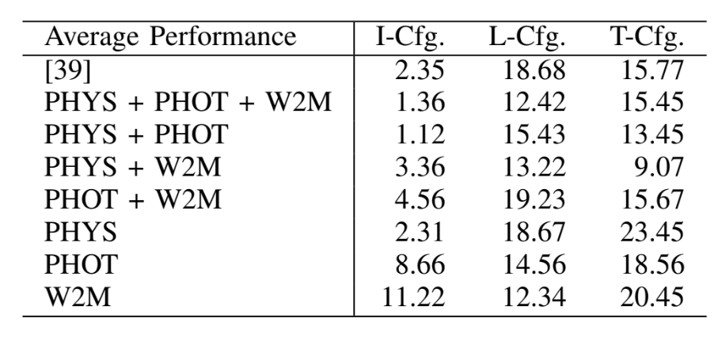

Walk2Map has emerged as a promising data- driven method to generate indoor traversability maps based solely on pedestrian trajectories, offering great potential for indoor robot navigation. In this study, we investigate a novel approach called Walk2Map++, which involves replacing Walk2Map’s first-person sensor (i.e., IMU) with a human observing third-person view from the robot’s onboard camera. However, human observation from a third-person camera is significantly ill-posed due to visual uncertainties resulting from occlusion, nonlinear perspective, depth ambiguity, and human- to-human interaction. To regularize the ill-posedness, we pro- pose integrating two types of constraints: photometric (i.e., occlusion ordering) and physical (i.e., collision avoidance). We demonstrate that these constraints can be effectively inferred from the interaction between past and present observations, human trackers, and object reconstructions. We depict the seamless integration of asynchronous map optimization events, like loop closure, into the real-time traversability map, facilitat- ing incremental and efficient map refinement. We validate the efficacy of our enhanced methodology through rigorous fusion and comparison with established techniques, demonstrating its capability to advance traversability prediction in complex indoor environments. The code and datasets associated with this study are available for further research and adoption in the field at https://github.com/jonathantyl97/HO3-SLAM.
Fig. 1. Vision-based traversability prediction is an open problem in crowded office environments where occlusions and obstacles are rich. In a crowded dynamic scene, it is difficult to obtain a good point cloud map and human detection due to occlusions and obstacles. The left and right panels show the DSO point cloud map and Detectron2 human detection mask, respectively.
Fig. 2. Block diagram of framework: All modules are interconnected via ROS (Robot Operating System). The PHYS module comprises DSO (Direct Sparse Odometry) and is responsible for generating point clouds utilized by other modules. Within the PHOT module, a Human-Object Occlusion Ordering Algorithm is employed to extract occlusion ordering information, which is then combined with point cloud coordinates derived from Detectron2 human masks. Additionally, the Walk2Map++ module utilizes human pose estimation to predict human distance from the camera and estimate traversable regions. These traversability maps are visualized using the rviz visualizer. In the traversability map image, the red box represent the estimated human location, hence the traversable region. The grey path indicates the traversable region, which has been walked by the human. The grey path is inprinted by the red boxes.
Fig. 3. Traversability prediction under severe occlusion. Left: Conven- tional first-person-view setup with IMU. Right: Proposed third-person-view monocular vision setup.
Fig. 4. Top-left: The projection of point clouds to the keyframes visualize; Top-right: Human mask used for occlusion ordering algorithm; Bottom-left: DSO; Bottom-right: Traversability map visualized with rviz visualizer.
Fig. 5. (Left, Middle): Human-centric coordinate system. As shown in the middle figure, keypoint 1 and keypoint 8 is used as a reference point of torso length.(Right): The relationship between occluder’s feature point and occluded human’s region.
Fig. 6. Left: Occlusion ordering algorithm; Right: Grouped cluster point cloud visualized in rviz visualizer. Purple cluster indicate points that are in front of the human, orange cluster indicate points that are behind of the human.
Fig. 7. (a) Online Traversability Map: In our traversability map, the red box represents the current camera position while the green box represents the estimated human location. The gray region indicates the human trail, hence the traversable region. The black lines indicates the obstacles or point cloud clusters. (b) Observer Robot set up, with a right-facing monocular camera mounted on the platform of approx. 1m height from ground
Fig. 8. I-Shape path experimental set up which simulates a crowded indoor scene.
Fig. 9. Bird’s eye view of obstacles setup of all kinds of configurations, namely I-Configuration, L-Configuration, and T-Configuration. The gray rectangle box indicates the point cloud data from DSO, hence the tables set up. The green trail is the frame positional data from DSO, and the red triangle is the current camera position, or current frame. Our data collection process is by using a robot equipped with a monocular camera and taking a video footage surrounding the set up.
Table1：Performance results
